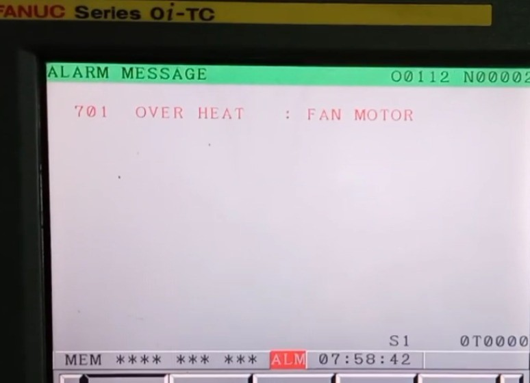

<section class="services-blog">
    <div class="container">
        <h1>Fanuc Alarm 701</h1>
        <h2 style="color: #e63946;">La alarma Fanuc 701: OVERHEAT: FAN MOTOR</h2>

        <div class="imagen-alarma">
            
            <p>
                <strong>Resumen de Riesgo:</strong><br>
                <strong>Estado:</strong> Aviso de sobrecalentamiento inminente.<br>
                <strong>Riesgo:</strong> Destrucción de la placa de control por exceso de temperatura.<br>
                <strong>Nivel de urgencia:</strong> Media-Alta (Requiere parada preventiva).<br>
                <span style="color: #cc0000; font-weight: bold;">🛑 ATENCIÓN: NO IGNORE ESTA ALARMA PARA EVITAR AVERÍAS COSTOSAS.</span>
            </p>
        </div>

        <h3>Causas principales:</h3>
        <ul>
            <li><strong>Fallo del Ventilador Interno:</strong> El ventilador de la unidad de control o del servoamplificador ha dejado de girar.</li>
            <li><strong>Obstrucción por Suciedad:</strong> Acumulación de aceite y polvo que bloquea el flujo de aire.</li>
            <li><strong>Fallo en el Circuito de Detección:</strong> Problema en la placa que monitoriza las revoluciones del ventilador.</li>
        </ul>

        <div style="background: #fff5f5; padding: 25px; border: 2px solid #e63946; border-radius: 8px; margin: 30px 0;">
            <h3 style="color: #e63946; text-align: center; margin-bottom: 15px;">⚠️ RIESGO DE DESTRUCCIÓN DE HARDWARE</h3>
            <p>La alarma 701 es un "seguro de vida" para su control Fanuc. Los componentes electrónicos internos operan a altas frecuencias y generan un calor extremo.</p>
            
            <p style="background: #e63946; color: white; padding: 15px; font-weight: bold; border-radius: 4px; text-align: center;">
                "Continuar trabajando con la alarma 701 activa puede provocar el quemado de la CPU o de los módulos de memoria en cuestión de minutos. El coste de sustituir un ventilador es insignificante comparado con la sustitución de una placa principal dañada por calor."
            </p>

            <p style="margin-top: 15px;"><strong>Nota técnica:</strong> En muchas ocasiones, el ventilador parece girar pero no alcanza las RPM necesarias para que el CNC lo valide, indicando un fallo interno inminente.</p>
        </div>

        <p>En <strong>CNC Systems</strong> disponemos de stock de ventiladores originales Fanuc y realizamos la sustitución de forma rápida para que su máquina no corra riesgos innecesarios.</p>

        <div style="text-align: center; margin-top: 40px; display: flex; gap: 20px; justify-content: center; flex-wrap: wrap;">
            <a href="tel:+34660404046" class="btn" style="background: #e63946; color: #fff; padding: 18px 35px; text-decoration: none; border-radius: 5px; font-weight: bold;">
                ⚡ SOLICITAR CAMBIO DE VENTILADOR (SAT)
            </a>
        </div>
        
        <br><br>
        <a href="error-fanuc.html" style="display: block; text-align: center;">Volver al listado</a>
    </div>
</section>